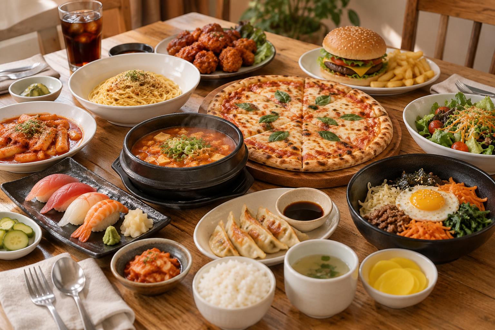

서비스 소개
메뉴 고민을 간단하게
오늘뭐먹지는 매일 식사 시간마다 어떤 음식을 먹을지 고민하는 사람들을 위한 메뉴 추천 서비스입니다.
먹고 싶은 음식이나 원하는 메뉴의 특징을 입력하면 메뉴를 선택하는 데 도움을 받을 수 있습니다.
주요 기능
-
메뉴 추천
입력한 내용을 바탕으로 먹을 메뉴를 추천합니다. -
취향 반영
한식, 중식, 일식 등 원하는 음식 종류를 선택할 수 있습니다. -
간단한 이용
복잡한 과정 없이 간단한 입력만으로 이용할 수 있습니다.
이용 방법
- 먹고 싶은 음식이나 원하는 조건을 생각합니다.
- 입력창에 원하는 내용을 입력합니다.
- 추천받은 메뉴를 확인하고 오늘의 식사를 선택합니다.
오늘의 메뉴 추천
